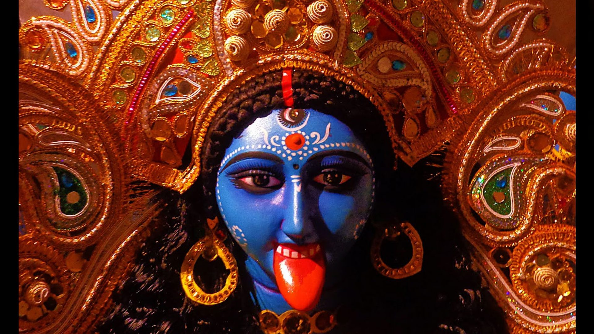
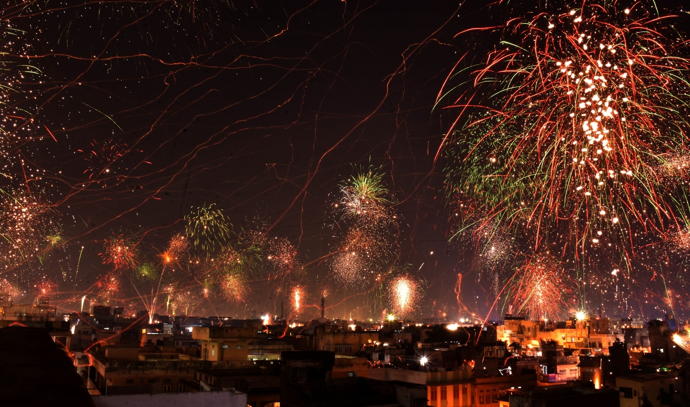

Festivals in Kolkata
The most popular festival in the city,Durga Pooja is celebrated for nine days with great pomp and enthusiasm across the city. The festival is celebrated, between the months of September and October, to mark the victory of Goddess Durga over Mahishasur. Durga Pooja is celebrated in other parts of India as Navratri. Dussehra marks the culmination of Durga Pooja.
66 Best Durga Puja in Kolkata 2021 | North and South pandal guide

Kali Puja & Diwali
Kali Puja. Kali Puja which coincides with the North Indian festival of Diwali is a major festival of West Bengal, and probably the second largest after Durga Puja.
Goddess Kali is worshipped at night in thousands of pandals, homes and temples. Kali Puja is light-up night for Bengal as well as for Kolkata. People decorate their homes with diyas, candles and lights and draw colourful rangolis
on the floors of their homes.

christmas in park street
Every December, The Kolkata Christmas Festival lights up the bustling Park Street. Themed decorations take to the streets, while twinkling LED ornaments sparkle
after sundown. The streets chime in harmonious carols, while a beautiful Christmas tree decked in baubles awaits at the end of Allen Park. As the city’s signature yellow taxi meanders its way through the sweater-draped crowds,
the reflections of fairy lights on the surface entice.
Calcutta Book Fair & Kolkata International Cinema Festival
Now known as the International Kolkata Book Fair, Calcutta Book Fair was first held in Kolkata in 1976 and has become a rage
lately, especially among book lovers. Kolkata International Cinema Festival is a week long cultural film festival organised in Kolkata. The festival showcases a range of Indian and International films, and is considered to
be one of the most loved and most awaited festivals in town, especially by cinema lovers. Organized by West Bengal Film Centre .